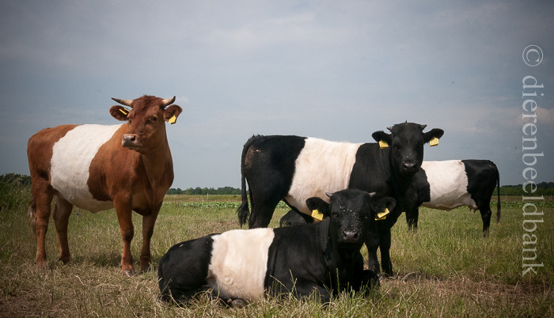

Verschillende soorten koeien
Het is moeilijk om een precies aantal koeienrassen wereldwijd vast te stellen, dat komt door de fokprogramma's, nieuwe ontwikkelingen en het mogelijk uitsterven van sommige rassen. Er zijn duizende rassen en variëteiten van koeien over de hele wereld. Hier zijn de tien bekendste koeienrassen met wat informatie.
| Koeienrassen | Afbeelding van de koe |
|---|---|
| Holstein-Friesian: Dit is een van de meest voorkomende melkveerassen ter wereld. Holstein-koeien zijn zwart-wit of rood-wit en staan bekend om hun hoge melkproductie. |  |
| Angus: Angus-koeien zijn vooral bekend om hun vleeskwaliteit. Ze zijn meestal zwart, hoewel rode Angus-varianten ook voorkomen. | |
| Hereford: Deze koeien hebben een roodbruine vacht met een witte kop en witte markeringen op het lichaam. Het ras staat bekend om zijn vleeskwaliteit en vriendelijke karakter. |  |
| Simmental: Simmental-koeien zijn groot en hebben een veelkleurige vacht, variërend van lichtrood tot donkerbruin. Ze worden vaak gebruikt voor zowel melk- als vleesproductie. | |
| Charolais: Charolais-koeien hebben een witte vacht en staan bekend om hun uitstekende vleeskwaliteit. Ze zijn oorspronkelijk afkomstig uit Frankrijk. | |
| Limousin: Limousin-koeien hebben een lichtgekleurde vacht en staan bekend om hun mager vlees. Ze worden vaak gebruikt in de vleesproductie. |  |
| Jersey: Jersey-koeien zijn klein van stuk en hebben een lichtbruine vacht. Ze staan bekend om hun hoge melkvetgehalte en worden veel gebruikt voor de productie van melkproducten zoals kaas en boter. | |
| Lakenvelder: Lakenvelder-koeien hebben een opvallend zwart-wit 'lakenvelder'-patroon op hun vacht. Ze zijn klein tot middelgroot en werden oorspronkelijk gefokt voor zowel melk- als vleesproductie. |  |
| Brahman: Brahman-koeien zijn oorspronkelijk afkomstig uit India en hebben een opvallende huidplooi op hun nek en schouders. Ze worden vaak gebruikt in kruisingsprogramma's vanwege hun hittebestendigheid. | |
| Schotse hooglander: Deze koeien hebben lange horens en een dikke vacht, waardoor ze goed bestand zijn tegen koude weersomstandigheden. Ze zijn vooral bekend om hun aanpassingsvermogen en worden vaak gehouden voor vleesproductie. |  |